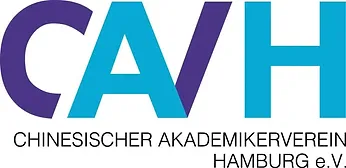

Hamburger Sportbund / 汉堡体育联合会（HSB)
Der Hamburger Sportbund (HSB) ist der Dachverband der Sportvereine und -verbände in Hamburg. Er fördert
den Sport in der Stadt, unterstützt die Vereine und setzt sich für die Interessen der Sportler ein. Der
HSB bietet zahlreiche Programme und Dienstleistungen an, um die sportliche Entwicklung und das
Gemeinschaftsgefühl zu stärken.
汉堡体育联合会（HSB）是汉堡市体育俱乐部和协会的总会。它促进城市体育的发展，支持俱乐部，并为运动员的利益而努力。HSB提供众多项目和服务，以加强体育发展和社区意识。

Hamburger Fußball-Verband / 汉堡足球协会（HFV)
Der Hamburger Fußball-Verband (HFV) ist der Dachverband für alle Fußballvereine in Hamburg. Er fördert
den Fußball in der Stadt, unterstützt die Vereine und setzt sich für die Interessen der Spieler ein. Der
HFV bietet zahlreiche Programme und Dienstleistungen an, um die sportliche Entwicklung und das
Gemeinschaftsgefühl zu stärken.
汉堡足球协会（HFV）是汉堡市所有足球俱乐部的总会。它促进城市足球的发展，支持俱乐部，并为球员的利益而努力。HFV提供众多项目和服务，以加强体育发展和社区意识。

Chinese Association of Hamburg Students / 汉堡学联（CAVH)
Die Chinesische Studentenvereinigung Hamburg (CAVH) ist eine Organisation, die chinesische Studenten in
Hamburg unterstützt. Sie fördert den kulturellen Austausch, bietet Unterstützung bei akademischen und
sozialen Fragen und organisiert verschiedene Veranstaltungen, um das Gemeinschaftsgefühl zu stärken.
汉堡学联（CAVH）是一个支持汉堡中国学生的组织。它促进文化交流，提供学术和社会问题的支持，并组织各种活动以加强社区意识。

EuroEyes / 德视佳眼科
EuroEyes ist eine führende Klinikgruppe für Augenlaser- und Linsenoperationen in Deutschland. Sie
bietet modernste Behandlungsmethoden zur Korrektur von Fehlsichtigkeiten und zur Verbesserung der
Sehkraft. EuroEyes hat sich einen Namen gemacht durch ihre hohe Qualität und ihren exzellenten Service.
德视佳眼科是德国领先的眼科激光和晶体手术诊所集团。它提供最先进的治疗方法来矫正视力缺陷和改善视力。德视佳以其高质量和卓越的服务而闻名。
Deutsche Vermögensberatung / 德国理财顾问公司（DVAG)
Die Deutsche Vermögensberatung (DVAG) ist ein führendes Finanzberatungsunternehmen in Deutschland. Sie
bietet umfassende Beratung und maßgeschneiderte Lösungen in den Bereichen Vermögensaufbau,
Altersvorsorge, Versicherungen und Immobilienfinanzierung. DVAG zeichnet sich durch ihre hohe
Beratungsqualität und ihren exzellenten Kundenservice aus.
德国理财顾问公司（DVAG）是德国领先的金融咨询公司。它在财富积累、养老保障、保险和房地产融资等领域提供全面的咨询和量身定制的解决方案。DVAG以其高质量的咨询服务和卓越的客户服务而闻名。

Kaytrip / 开元周游
Kaytrip ist ein führendes Reiseunternehmen, das sich auf maßgeschneiderte Reisen und Touren für
chinesische Touristen in Europa spezialisiert hat. Das Unternehmen bietet eine Vielzahl von
Dienstleistungen an, darunter individuelle Reiseplanung, Gruppenreisen, Hotelbuchungen und
Transportlösungen. Kaytrip ist bekannt für seine hohe Servicequalität und seine umfassende Kenntnis der
europäischen Reiseziele.
开元周游是一家领先的旅游公司，专门为中国游客提供欧洲定制旅行和旅游服务。公司提供多种服务，包括个性化旅行规划、团队旅游、酒店预订和交通解决方案。开元周游以其高质量的服务和对欧洲旅游目的地的全面了解而闻名。